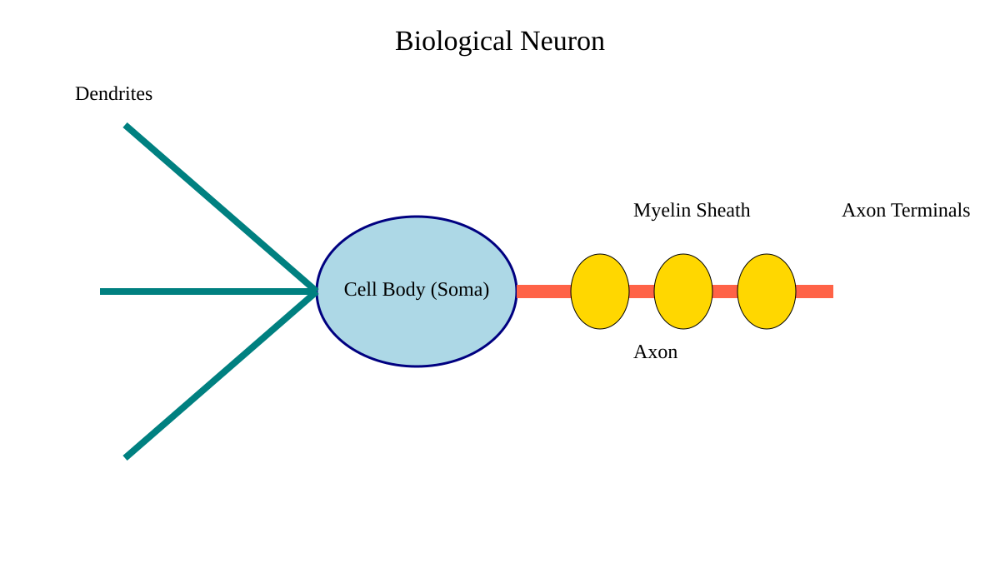

Chapter 2: How the Human Brain Inspired AI
Learning Objectives
By the end of this chapter, you will understand:
- Why early AI researchers looked to the human brain for inspiration.
- What neurons are and how they communicate.
- How biological neurons inspired artificial neurons.
- The similarities and differences between brains and AI systems.
- Why AI is not a digital human brain.
Opening Story
[Story-driven introduction goes here.]
The Most Powerful Machine We Know
[Explain why the human brain fascinated scientists.]
Key Idea
The human brain became the original inspiration for artificial intelligence because it was the best example of intelligence humans knew.
Visual: The Human Brain
Insert brain illustration here.
Caption: Different regions of the brain work together to help us learn, remember, communicate, and make decisions.
What Is a Neuron?
[Simple explanation of neurons.]
Diagram: A Biological Neuron
Dendrites
↓
[ Cell Body ]
↓
Axon
↓
Signal Out
Caption: A neuron receives signals, processes them, and passes information forward.
Networks of Neurons
[Explain that intelligence comes from many connected neurons.]
Visual: Network of Neurons
Insert neuron network image here.
Caption: Intelligence emerges from billions of interconnected neurons working together.
The Big Idea That Changed Everything
[Introduce the idea of creating a mathematical version of a neuron.]
Key Idea
Scientists did not try to copy the entire brain. They tried to copy one simple idea: learning through connections.
Diagram: Biological vs Artificial Neuron
Biological Neuron
Signals In
↓
Neuron
↓
Signal Out
Artificial Neuron
Numbers In
↓
Calculation
↓
Number Out
Caption: Artificial neurons imitate the basic information flow of biological neurons.
Early Researchers Begin to Imagine Intelligent Machines
[Historical transition toward Chapter 3.]
Visual: Early AI Researchers
Insert historical illustration here.
Caption: Researchers began asking whether machines could imitate some of the brain's learning processes.
Similar but Not the Same
[Explain differences between brains and AI.]
Human Brain vs AI System
| Human Brain | AI System |
|---|---|
| Biological neurons | Artificial neurons |
| Learns from experience | Learns from training data |
| Runs on about 20 watts | Requires substantial computing power |
| Conscious experience | No known consciousness |
Visual: Modern AI Data Center
Insert data center image here.
Caption: Modern AI systems often require enormous computing resources compared with the human brain.
Why This Matters
[Connect concepts to modern AI.]
Questions You Can Now Answer
- Why are AI systems called neural networks?
- Why do AI models learn from data?
- Why do people compare AI to the human brain?
- Why is AI not actually a brain?
Common Misconceptions
Myth: AI is a digital brain.
Reality: AI is a mathematical system inspired by some ideas from neuroscience.
Myth: AI thinks exactly like humans.
Reality: AI processes information very differently from human beings.
Chapter Summary
[Concise recap of major lessons.]
Looking Ahead
Scientists soon attempted something revolutionary.
Instead of merely studying neurons, they tried to describe one using mathematics.
That effort would lead to the first artificial neuron and mark the beginning of modern AI.
Next Chapter: Artificial Neurons (1943)
Opening Story
Think about the last time you recognized someone you knew.
Perhaps you were walking through a busy airport, shopping mall, courthouse, or university campus. People were everywhere. Hundreds of faces passed by in every direction.
Then suddenly, without any effort, you spotted a friend.
You didn't stop to analyze the shape of their eyes. You didn't measure the distance between their nose and mouth. You didn't compare thousands of visual details against a mental database.
You simply knew.
In less than a second, your brain performed a task so complex that scientists are still trying to fully understand how it works.
Now consider everything else your brain was doing at the same moment.
You were hearing conversations around you.
Reading signs.
Avoiding obstacles.
Remembering where you needed to go.
Perhaps thinking about a meeting, an assignment, or what you wanted for lunch.
All of this happened automatically.
In fact, your brain performs an astonishing number of tasks every second without asking for your permission or even making you aware of them.
Most of us spend our entire lives using this incredible organ without ever stopping to think about how extraordinary it really is.
Yet for centuries, scientists, philosophers, and inventors could think of little else.
What exactly is intelligence?
How do humans learn?
Why can we recognize patterns, understand language, solve problems, and adapt to new situations?
And perhaps most importantly:
Could a machine ever do the same?
For much of human history, that question sounded absurd.
Machines could follow instructions. They could perform calculations. They could repeat tasks with remarkable speed and accuracy.
But learning?
Understanding?
Recognizing?
Those seemed to belong exclusively to living minds.
As computers began to appear in the twentieth century, a small group of researchers started looking for clues in the most intelligent system they knew existed: the human brain.
They were fascinated by its ability to learn from experience. Unlike a calculator, the brain did not need to be programmed for every situation it encountered. It adapted. It improved. It learned.
The researchers wondered whether some of those principles could be recreated in a machine.
Not by copying the brain exactly.
The brain was far too complex for that.
Instead, they hoped to understand the basic mechanisms behind learning and intelligence. If they could uncover those principles, perhaps they could build machines capable of learning as well.
That simple idea would eventually lead to one of the most important technological revolutions in human history.
Modern artificial intelligence did not begin with computers.
It began with curiosity about the human brain.
Before we can understand how AI works, we must first understand the remarkable biological system that inspired it.
And that story begins with the most powerful learning machine ever discovered—the human brain.
The Most Powerful Machine We Know
If you asked a group of scientists in the early twentieth century to point to the most intelligent system on Earth, they would not have pointed to a machine.
They would have pointed to the human brain.
Even today, after decades of scientific research and extraordinary advances in technology, the brain remains one of the most remarkable objects ever studied.
Consider what it allows us to do.
A child can learn a language without reading a manual.
A musician can recognize a familiar melody after hearing only a few notes.
A lawyer can listen to an argument, evaluate evidence, recall relevant knowledge, and form a conclusion.
A driver can navigate busy traffic while simultaneously recognizing signs, monitoring other vehicles, and carrying on a conversation.
These abilities feel effortless to us because our brains perform them automatically. Yet each of them requires an immense amount of information processing.
For centuries, scientists tried to understand how this was possible.
How does a person recognize a face they have not seen in years?
How can someone learn from experience and improve over time?
Why can humans adapt to new situations when machines of the past could only follow instructions?
The more researchers studied these questions, the more extraordinary the brain appeared.
Although it weighs only about three pounds (1.4 kilograms), the human brain contains approximately 86 billion neurons—specialized cells that communicate with one another through electrical and chemical signals.
That number is difficult to imagine.
If you counted one neuron every second without stopping, it would take thousands of years to count them all.
Yet the true power of the brain does not come from individual neurons.
A single neuron is relatively simple.
The magic happens because billions of neurons are connected together in vast networks. Each neuron communicates with many others, creating an unimaginably complex web of interactions.
From those interactions emerge memory, language, creativity, reasoning, and learning.
This idea fascinated researchers.
Intelligence did not appear to come from one special location inside the brain. Instead, it seemed to emerge from enormous numbers of simple components working together.
That observation would eventually become one of the most influential ideas in the history of artificial intelligence.
Researchers began asking a new question.
What if intelligence does not require a perfect replica of the human brain?
What if intelligence can emerge whenever enough simple processing units are connected together and allowed to learn from information?
The question was revolutionary.
Rather than trying to build a machine that copied every detail of human thought, scientists began exploring whether they could imitate some of the brain's underlying principles.
The first step was understanding the brain's basic building block.
Before researchers could create artificial intelligence, they needed to understand the tiny cells that make learning possible.
Those cells are called neurons.
What Is a Neuron?
To understand how the brain inspired artificial intelligence, we first need to understand its most basic building block: the neuron.
A neuron is a tiny cell in the brain that helps process and transmit information.
On its own, it is simple. But when connected with billions of others, it becomes part of something far more powerful.
Think of a neuron as a very small decision-maker.
It receives information, processes it, and passes a result onward.
Each neuron has three main parts:
Dendrites receive signals from other neurons.
The cell body processes those signals.
The axon sends the result to other neurons.
You do not need to remember these names. What matters is the flow of information.
Input comes in.
Something happens inside.
Output goes out.
That is it.
Now imagine this happening not just once, but billions of times at the same time inside your brain.
Every thought you have, every memory you recall, every decision you make is built on this simple pattern repeated at an unimaginable scale.
A single neuron does not “think” in the way we usually understand thinking.
Instead, intelligence emerges when neurons work together in networks.
One neuron passes information to another, which passes it to another, forming chains and clusters of communication.
Over time, these connections can become stronger or weaker depending on experience. This is one of the key reasons humans are able to learn.
For example, when you first learn to drive, everything feels slow and deliberate. You think about every movement.
But after enough practice, your brain reorganizes these connections. The process becomes automatic. You no longer consciously think about every small action.
This ability to adapt is not located in a single neuron. It comes from the way many neurons change their connections over time.
That is the key idea.
A neuron is not important because of what it does alone.
It is important because of how it connects.
This simple insight became the foundation for artificial intelligence.
Researchers later asked a bold question:
If biological neurons can process signals and learn through connections, could we build a simplified mathematical version of a neuron?
That question leads directly to the next step in this story: the birth of the artificial neuron.
What Is a Neuron?
To understand how the brain inspired artificial intelligence, we first need to understand its most basic building block: the neuron.
A neuron is a tiny cell in the brain that helps process and transmit information.
On its own, it is simple. But when connected with billions of others, it becomes part of something far more powerful.
Think of a neuron as a very small decision-maker.
It receives information, processes it, and passes a result onward.
Each neuron has three main parts:

Figure 2.1 – A biological neuron receives signals through dendrites, processes them in the cell body (soma), and transmits signals along its axon to other neurons.
Dendrites receive signals from other neurons.
The cell body processes those signals.
The axon sends the result to other neurons.
You do not need to remember these names. What matters is the flow of information.
Input comes in.
Something happens inside.
Output goes out.
That is it.
Now imagine this happening not just once, but billions of times at the same time inside your brain.
Every thought you have, every memory you recall, every decision you make is built on this simple pattern repeated at an unimaginable scale.
A single neuron does not “think” in the way we usually understand thinking.
Instead, intelligence emerges when neurons work together in networks.
One neuron passes information to another, which passes it to another, forming chains and clusters of communication.
Over time, these connections can become stronger or weaker depending on experience. This is one of the key reasons humans are able to learn.
For example, when you first learn to drive, everything feels slow and deliberate. You think about every movement.
But after enough practice, your brain reorganizes these connections. The process becomes automatic. You no longer consciously think about every small action.
This ability to adapt is not located in a single neuron. It comes from the way many neurons change their connections over time.
That is the key idea.
A neuron is not important because of what it does alone.
It is important because of how it connects.
This simple insight became the foundation for artificial intelligence.
Researchers later asked a bold question:
If biological neurons can process signals and learn through connections, could we build a simplified mathematical version of a neuron?
That question leads directly to the next step in this story: the birth of the artificial neuron.
Networks of Neurons
A single neuron is not intelligent.
Even a thousand neurons working alone would not produce anything close to human thinking.
The real power of the brain comes from scale and connection.
Neurons do not operate in isolation. They form vast networks, passing signals from one to another in continuous interaction. Each neuron influences many others, and is influenced in return.
This creates a system where information is constantly flowing, changing, and updating.
You can think of it like a massive communication network inside your head.
No single point controls everything.
There is no central “brain inside the brain.”
Instead, intelligence emerges from the interaction of many simple parts.
This idea is important because it changes how we think about intelligence itself.
For a long time, people assumed intelligence must come from a central place, like a command center making decisions.
But the brain does not work that way.
It is distributed.
It is collective.
It is built from connections rather than control.
This explains something interesting about learning.
When you learn something new, your brain does not create a new “file” in one location. Instead, it adjusts the strength of connections between neurons across many regions.
Some connections become stronger because they are used more often.
Others become weaker because they are rarely used.
Over time, this shifting network is what we experience as learning and memory.
This is also why the brain is so flexible.
It can adapt to new environments, new skills, and even partial damage by reorganizing its connections.
No single neuron is essential on its own. What matters is the pattern of connections across the entire system.
This idea had a powerful effect on early researchers.
If intelligence could emerge from networks of simple units in the brain, then perhaps intelligence could also emerge in machines built from artificial units connected in similar ways.
They did not need to replicate biology exactly.
They only needed to capture the principle: many simple elements, connected together, capable of adjusting based on experience.
This way of thinking became the foundation of neural networks in artificial intelligence.
And it set the stage for one of the most important breakthroughs in AI history: the idea of the artificial neuron.
The Big Idea That Changed Everything
For decades, scientists admired the brain but had no way to recreate it.
They could describe it. They could study it. They could measure it.
But they could not build anything like it.
The problem was not just technology. It was understanding.
The brain was too complex, too messy, too biological to directly copy into a machine.
So researchers began to simplify the question.
Instead of asking, “How do we recreate a brain?”
They asked something more precise:
“What is the simplest possible unit that still captures the idea of learning?”
This shift in thinking was crucial.
It moved the goal away from copying biology and toward capturing principles.
If intelligence came from networks of simple units in the brain, then maybe it was possible to design a simplified version of those units in mathematical form.
Not cells.
Not biology.
But abstractions.
Something that could live inside equations instead of tissue.
This was a radical idea at the time.
Computers in the mid-20th century were not designed for learning. They were designed for calculation. Step-by-step instructions. Fixed rules. Predictable outcomes.
The idea that a machine could adapt based on experience went against how computers were originally understood.
But the brain suggested something different.
It suggested that intelligence might not require strict rules at all.
It might require something more flexible.
Something that could adjust itself over time.
So researchers made a bold move.
They began to describe a neuron not as a biological cell, but as a simple mathematical function.
Something that takes inputs, combines them, and produces an output.
Nothing more.
At first glance, it was almost too simple to matter.
But simplicity is often where powerful ideas begin.
Because once you can represent a neuron mathematically, you can do something revolutionary:
You can build it inside a machine.
And once you can build one artificial neuron, you can connect many of them together.
Just like in the brain.
This was the turning point.
The moment intelligence stopped being only a biological mystery—and started becoming something engineers could design.
That idea would soon lead to the first artificial neuron in 1943.
And from there, everything would begin to change.
Similar but Not the Same
At this point, it is easy to make a mistake.
If artificial intelligence is inspired by the human brain, it might be tempting to assume they are basically the same thing.
They are not.
The similarity is in the idea, not in the substance.
The brain is a biological system. It is made of living cells, chemical reactions, and electrical signals. It is shaped by evolution over millions of years and runs continuously, consuming very little energy.
Artificial intelligence, on the other hand, is a mathematical system. It runs on hardware designed by humans. It processes numbers, not biological signals. It learns through data, not lived experience.
Both systems can learn from information, but they do so in very different ways.
The human brain learns continuously. Every experience, conversation, and observation can subtly reshape it in real time.
Most AI systems learn in a more controlled way. They are trained on large sets of data first, and only then used to make predictions or generate outputs.
Another important difference is efficiency.
The human brain runs on roughly the power of a light bulb. It can recognize faces, understand language, and make complex decisions while using very little energy.
Modern AI systems often require large amounts of computing power, sometimes spread across entire data centers.
There is also a difference in understanding.
Humans have consciousness, emotions, and subjective experience. We understand not just information, but meaning.
AI does not “understand” in that way. It processes patterns in data and produces outputs based on those patterns. It does not have awareness, intention, or experience.
These differences matter.
Because they remind us that AI is not a digital human mind.
It is a tool designed to imitate certain capabilities of intelligence, not the full depth of human cognition.
Still, the inspiration from the brain is real.
Early researchers did not try to recreate human thought exactly. They borrowed a single powerful idea:
Intelligence might emerge from many simple units working together in a network.
That idea became the foundation of neural networks in artificial intelligence.
And it is the reason modern AI systems can learn from data at all.
Why This Matters
At this point, a reasonable question arises.
Why does any of this matter?
Why should a law student, a professional, or anyone outside of computer science care about neurons, brains, and early scientific ideas?
Because nearly every modern AI system traces its intellectual roots back to the ideas in this chapter.
When people today talk about artificial intelligence, they are usually referring to systems that learn from data, recognize patterns, generate text, or make predictions.
But none of that appeared suddenly.
It began with a simple observation from neuroscience:
Intelligence does not come from a single central unit. It emerges from networks of simple components working together.
That idea shaped how engineers designed early models of machine learning. It influenced how neural networks were built. It still influences how modern AI systems are trained today.
Even when you use advanced tools like language models, recommendation systems, or legal research assistants, you are interacting with systems that ultimately descend from this concept.
For law students in particular, this matters for a different reason.
AI is increasingly being used to read documents, summarize cases, draft arguments, and assist with legal research. Understanding what these systems are—and what they are not—helps you use them responsibly.
If you think of AI as a human-like mind, you will misunderstand its strengths and weaknesses.
If you understand it as a system built from mathematical “neurons” trained on data, you will see it more clearly for what it is: powerful, but limited.
This distinction is not just academic.
It affects how you evaluate evidence generated by AI.
It affects how you think about bias, accuracy, and reliability.
And it affects how you decide when to trust a system—and when not to.
In other words, understanding where AI came from is not just history.
It is practical knowledge for anyone working in a world where AI is becoming part of everyday decision-making.
And all of it begins with the simple idea that inspired this entire field:
What if intelligence could emerge from many small connected units, just like it does in the brain?
Looking Ahead
Up to this point, we have focused on a simple but powerful idea.
The human brain is made of billions of neurons.
These neurons work together in networks.
And from those networks, intelligence emerges.
For early researchers, this was more than just a scientific observation. It was a possible blueprint.
If intelligence could arise from simple connected units in the brain, then perhaps it could also be recreated in a simplified mathematical form.
Not perfectly.
Not biologically.
But functionally.
This shift in thinking marked the beginning of a new direction in science.
Instead of only studying intelligence, researchers began trying to build it.
The next question was straightforward, but revolutionary:
Can we describe a neuron using mathematics?
That question led to one of the first true attempts to build an artificial model of a brain cell.
It was not powerful by modern standards.
In fact, it was extremely limited.
But it was the first step.
And in the history of artificial intelligence, first steps matter more than anything else.
In the next chapter, we will meet the artificial neuron created in 1943, and see how a simple mathematical idea began the long path toward modern AI systems.